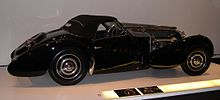
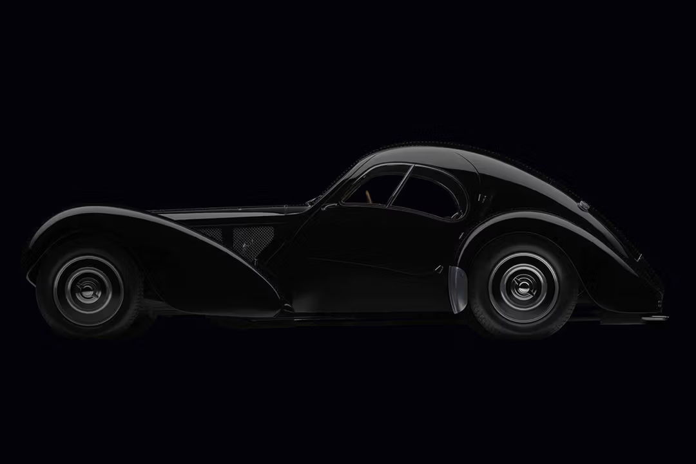

The Bugatti Type 57[1] and later variants (including the famous Atlantic and Atalante) was a grand tourer built from 1934 through 1940. It was an entirely new design created by Jean Bugatti, son of founder Ettore.[2] A total of 710 Type 57s were produced.  Type 57s used a straight-8 twin-cam engine of 3.3 L (3257 cc/198 in³) displacement. Bore and stroke were 72 mm by 100 mm based on that of the Type 49 but heavily modified by Jean Bugatti, unlike the single cam engines of the Type 49 and earlier models.[3] The engines of the Type 50, 51 used bevel gears at the front of the engine to transmit power from the crankshaft, whereas the Type 57 used a train of spur gears at the rear of the engine, with fiber gear wheels on the camshafts to achieve more silence in operation. 